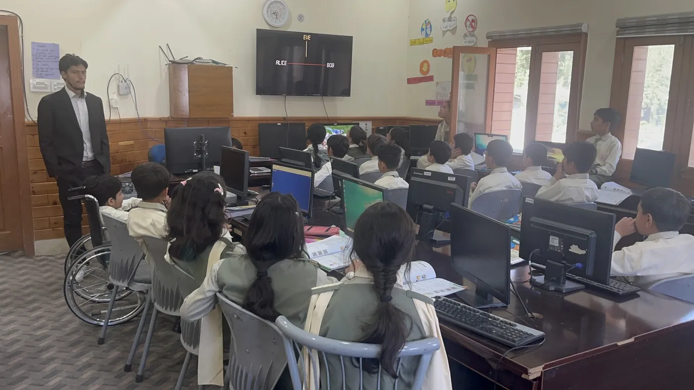
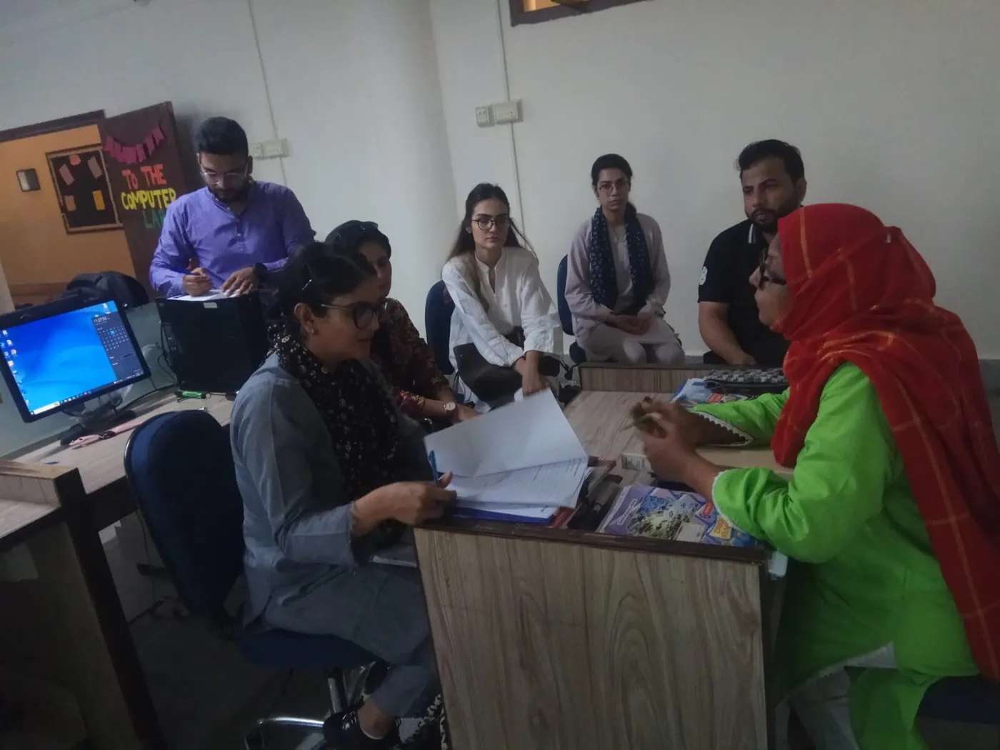
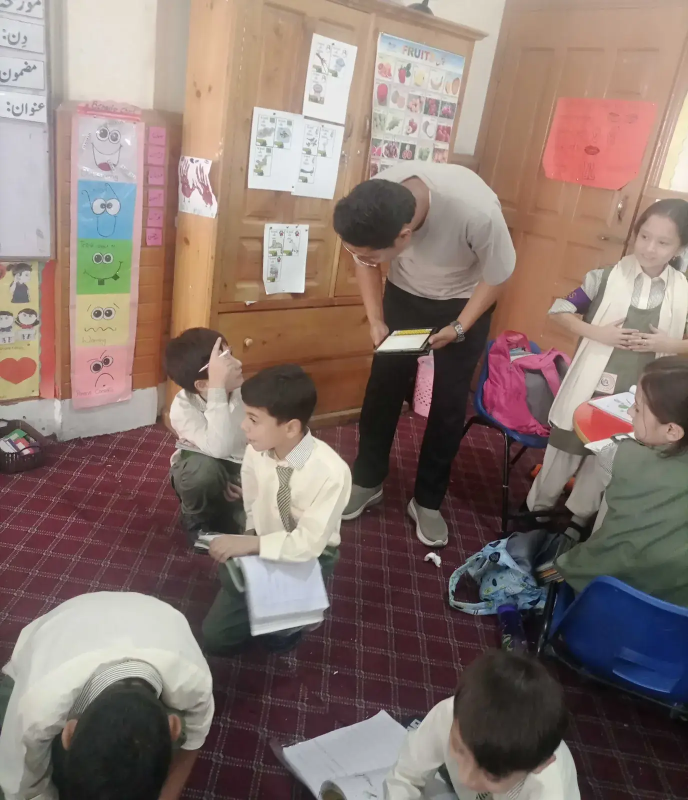
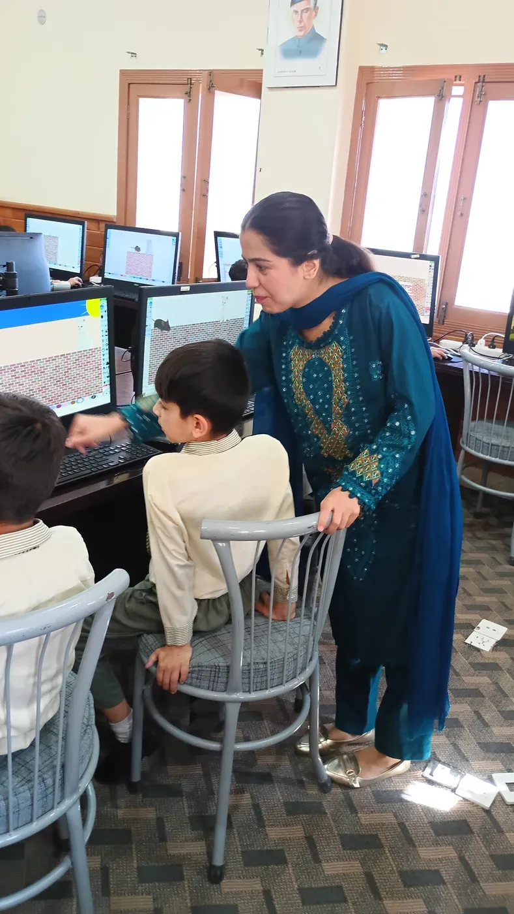
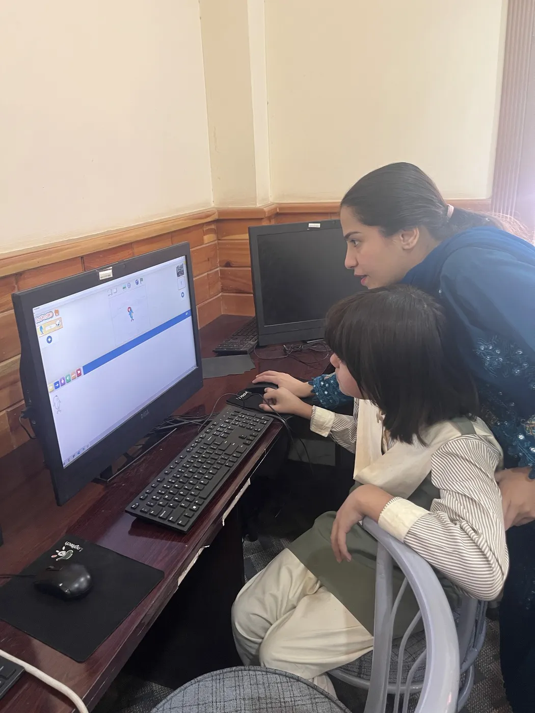

4 reviews a year
Quarterly
A review every quarter, for the closest tracking and the fastest course correction.
Custom quote for your school
Request a proposal··
We assess your students, observe your classrooms and talk to your teachers, then give you a clear, grade-wise report on what is working and what to change.
How we evaluate your school
A complete picture from tests, classrooms and the people who teach and learn in them.
Before
A baseline of where students stand before the term begins.
During the term
Our team observes classes to see how lessons are delivered and how students respond.
During the term
Conversations with teachers, students and school administration.
During the term
Tests after each module to check what students have actually learned.
After
A final assessment to measure progress against the baseline.
After
A clear report for school leadership, with next steps.



What you receive
See how each grade is performing, and how far it has moved since the pre-assessment.
Learning gaps, teaching challenges and delivery problems, flagged early and explained clearly.
Practical, specific actions for teachers and school leadership.
Using ITEC? Monitoring and evaluation is already part of the ITEC program.

Why principals choose M&E?
An outside team, a fixed process and a report that leadership, teachers and parents can understand.

Spot gaps during the year, not after the final exams.
Clear feedback that helps teachers improve their classroom practice.
Evidence of student progress you can share with parents and your board.
An outside team gives you an honest picture of how teaching is going.
Choose how often
Every plan includes assessments, school visits, interviews and a full report with recommendations.
4 reviews a year
A review every quarter, for the closest tracking and the fastest course correction.
Custom quote for your school
Request a proposal2 reviews a year
A mid-year and an end-of-year review, balancing regular insight with less disruption.
Custom quote for your school
Request a proposal1 review a year
One full-year evaluation, from pre-assessment to post-assessment and final report.
Custom quote for your school
Request a proposalCommon questions